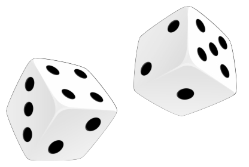

Experience
2022: Dice Game
Project Coder/Website Designer

2020-2021: Arch Laboratory
Volunteer Research Assistant

I am a cognitive science undergraduate at UC San Diego and principle investigator at the ABCD Study, the largest long-term study of brain development and child health in the United States. My research currently explores the dynamic relationship between free-time reading and white matter in the brain.
I also have a background in coding from analyzing dMRI data and computer science projects. I have worked with R, MATLAB, JavaScript, HTML, and CSS.
The ABCD Study is a ten-year longitudinal study of nearly 12,000 children across the United States.
Currently, I am investigating the correlations between free-time reading and white matter changes in the brain. I use R and MATLAB to identify correlation strengths and identify patterns.
Arch Laboratory is a behavioral Science lab at the University of Colorado Boulder that investigates anxiety disorder treatments and focuses on the intersection with cancer patients.
Between Fall 2020-Spring 2021, I assisted a research study examining the effect of phobic anxiety on immune and autonomic nervous system responses. I developed wet lab skills working with bio samples and received certification in Socio-Behavioral Educational Research and Hazardous Waste Training.